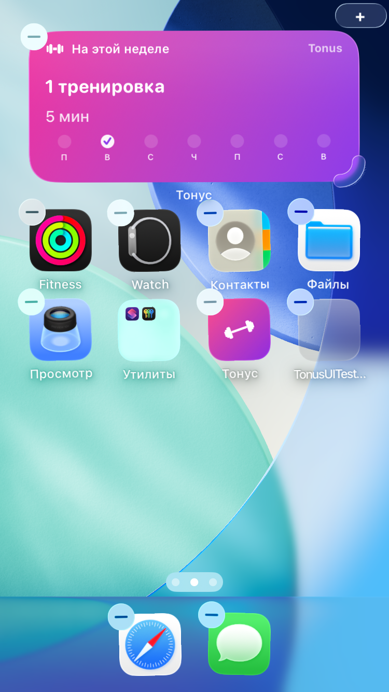
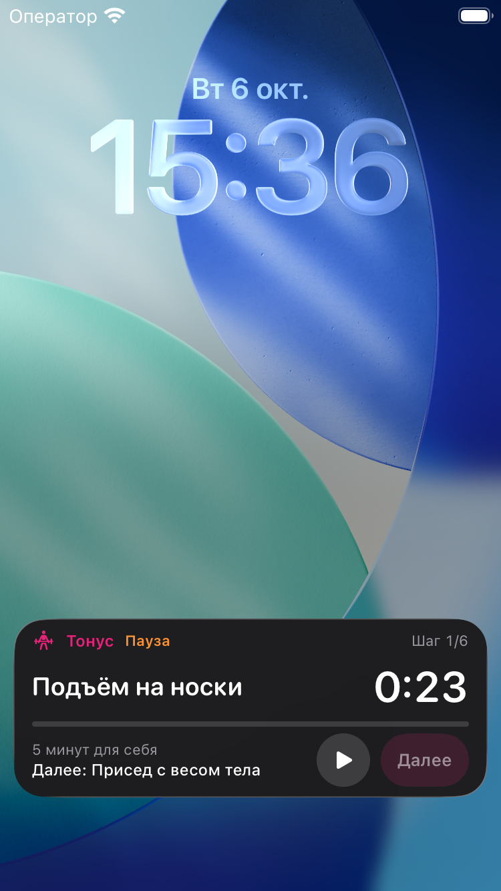

Por Nikita Revin, desenvolvedor do Tonus · 22 de outubro de 2026
Coloque um atalho de treino na Tela de Início e acompanhe a sessão do Tonus pela Tela Bloqueada.
Para começar uma sessão curta, você pode deixar um atalho do Tonus na Tela de Início. Durante o treino, a Atividade ao Vivo mostra a etapa atual e os controles de pausa na Tela Bloqueada. Veja como preparar cada um e o que conferir quando a sessão estiver em andamento.
Adicione um atalho para começar um treino
- Na Tela de Início do iPhone, mantenha uma área vazia pressionada até os ícones começarem a tremer.
- Abra Editar e depois Adicionar Widget. Em versões do iOS que mostram o botão de adição diretamente, toque nesse botão.
- Procure Tonus, escolha o widget de treino curto e selecione o tamanho.
- Toque em Adicionar Widget e conclua a edição da tela.
O atalho principal abre uma sessão de cinco minutos no Tonus. No tamanho médio, há também atalhos para dez e vinte minutos. Ao tocar, você volta ao aplicativo para seguir o treino; o widget não registra uma sessão como concluída só por ter sido aberto.
Os nomes e a posição dos botões do sistema podem variar com o iOS. A Apple mantém as instruções para adicionar e editar widgets.
Use o widget da semana para consultar o histórico
Se você quer ver o que já fez, procure a opção Nesta semana na galeria do Tonus. Ela mostra a quantidade de treinos concluídos, os minutos registrados e os dias da semana com atividade. Tocar nesse widget abre a área de progresso do app.
O contador usa o histórico salvo no Tonus. Se você acabou de terminar uma sessão, confirme o resultado no aplicativo antes de conferir o widget. A atualização da tela também depende do iOS; se os números parecerem antigos, consulte o histórico dentro do Tonus.

Acompanhe a sessão na Tela Bloqueada
No Tonus, abra Perfil e confira a opção Treino na tela bloqueada. Ela precisa estar ativada para o app iniciar a Atividade ao Vivo. O iPhone também precisa permitir Atividades ao Vivo para o Tonus.
Comece um treino dentro do aplicativo e depois bloqueie o iPhone. A atividade mostra o exercício ou o descanso atual, a etapa da sessão e a contagem correspondente. Em modelos com Dynamic Island, o Tonus também pode mostrar a atividade nessa área.
Use o botão de pausa para interromper a contagem e o de reprodução para retomar. Enquanto a sessão está pausada, Próximo fica desativado. Ao retomar, Próximo permite concluir a série atual ou pular o descanso, conforme a etapa. O Tonus não conta suas repetições automaticamente.

Confira a próxima etapa antes de continuar
Se um intervalo terminar enquanto o aplicativo estiver em segundo plano, a sessão aguarda confirmação. Ela não percorre vários exercícios sozinha. Abra o Tonus para conferir o movimento e continuar quando estiver pronto.
Depois da última etapa, volte ao aplicativo e confirme o resultado na tela de dificuldade para salvar o treino concluído. A Atividade ao Vivo acompanha a sessão em andamento; o registro final fica no histórico.
Se a Atividade ao Vivo não aparecer
Confira primeiro a opção Treino na tela bloqueada no Perfil do Tonus. Depois, nos Ajustes do iPhone, procure Tonus e veja se o sistema permite Atividades ao Vivo para o app. Volte ao aplicativo com uma sessão aberta antes de bloquear a tela.
Se a atividade continuar ausente, acompanhe a sessão dentro do Tonus. Quando a Atividade ao Vivo não está ativa, o aplicativo pausa a sessão ao ir para segundo plano; ao voltar, confira o estado antes de retomar.
Prepare o conteúdo antes de ficar sem conexão
Planos e instruções por escrito funcionam offline. Vídeos online precisam de internet, e serviços externos podem mostrar anúncios. Para usar um clipe compatível sem rede, baixe-o previamente no Tonus e teste a reprodução antes de sair da conexão. O guia de uso offline explica esse caminho.
O Tonus 1.4 é gratuito, não exige cadastro nem assinatura e funciona no iPhone com iOS 17 ou posterior.